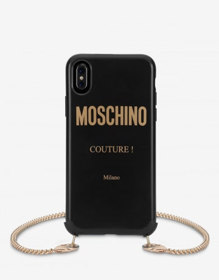
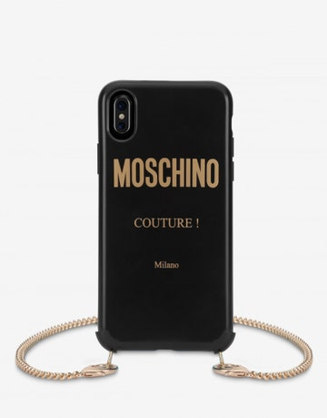

Vivimos en una época en la que la industria de la moda corre deprisa, las tendencias son más fugaces que nunca y existen nuevos canales en los que las prendas y accesorios cobran éxito (posiblemente, incluso más que en las pasarelas); Instagram y el street style, que se se han establecido como unas plataformas de marketing más para las firmas. La calle y las publicaciones de Instagram se han posicionado como la traducción de las tendencias a la realidad, con accesorios y prendas diseñados para triunfar en las fotografías, basta con recordar el éxito del (diminuto) bolso Le Chiquito de Jacquemus. Ahora, las insiders apuestan al unísono por un inesperado accesorio que comienza a convertirse en viral; la funda para el móvil con cadena.
 



Es un hecho: en la era de internet los smartphones se han convertido en una extensión de nuestro cuerpo, por lo tanto, no es de extrañar que la industria de la moda también reclame su porción de pastel creando una nueva necesidad acorde con los teléfonos: un complemento irresistible y práctico, porque, en una época en el que los móviles son cada vez más grandes y los bolsos XS lideran las tendencias, resulta casi obligatorio llevar el móvil siempre en la mano.
Paso 1: tienes que mandarnos un mensaje directo por instagram o por cualquier red social en la que estemos disponibles, ahi te haremos una preguntas para poder llevar a cabo tu pedido.
Paso 2:Elegir la funda del diseño que mas te guste para que podamos crear tu funda
Paso 3: Si deseas algun diseño creativo que no este en nuentros catalogos, tienes que mandarnos algunas esecificaciones para poder realizar tu funda.
Paso 4: Espera que llegue tu pedido